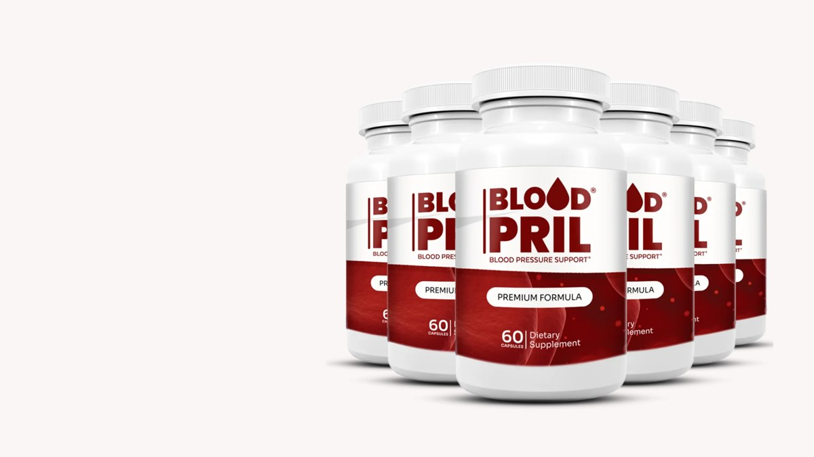
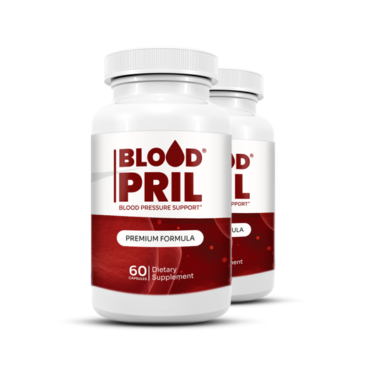
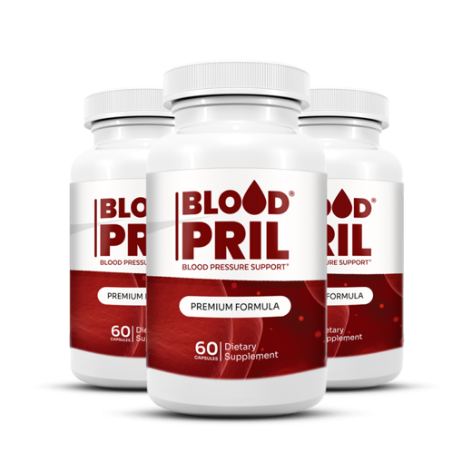

Blood Pril Reviews: What the Label Says and Who It Suits
One proprietary blend, three amino acids, one or two capsules a day. We read the panel, did the price math and wrote down the limits most Bloodpril pages leave out.

Key takeaways
- It's a nitric-oxide amino acid capsule. Each capsule holds a 500 mg proprietary blend of L-arginine HCl, L-arginine alpha-ketoglutarate and L-citrulline malate.
- The split isn't printed. The label gives the 500 mg total, not how much of each amino acid you get.
- The dose is small next to the research. One or two capsules supply 0.5 to 1 gram in total; blood pressure studies of these amino acids mostly use several grams a day.
- It doesn't replace medication. Blood Pril supports healthy circulation. It isn't a treatment for high blood pressure, and you shouldn't stop or change a prescription for it.
- Some people should skip it. Anyone on nitrates, erectile dysfunction drugs or several blood pressure medicines, and anyone who has had a heart attack, needs a doctor's answer first.
Blood Pril is a capsule supplement built on three nitric-oxide amino acids: L-arginine HCl, L-arginine alpha-ketoglutarate and L-citrulline malate, in a 500 mg proprietary blend. Our Blood Pril review finds a reasonable idea at a low dose. It may support healthy circulation, but it doesn't lower blood pressure the way medication does and shouldn't replace it.
That's the short version. Below we go through the label line by line, compare the dose with what researchers actually use, work out the cost per day for each package and set out who should leave it on the shelf. If you mainly want the science, our companion piece on whether Blood Pril works goes deeper on nitric oxide.

Blood Pril: check today's price
A nitric-oxide amino acid blend (arginine and citrulline) for circulation support. One or two capsules a day. Sold only on the official site, with a 60-day money-back guarantee.
See the official price →What is Blood Pril?
Blood Pril (some people search it as Bloodpril) is a dietary supplement sold in 60-capsule bottles through its official website. The front of the bottle says "Blood Pressure Support" and "Premium Formula." The back carries a Supplement Facts panel with one entry, a proprietary blend, plus the usual FDA disclaimer that the product isn't intended to diagnose, treat, cure or prevent any disease.
The label lists Instituto Experience of Lakeland, Florida as the distributor and says it's made in the USA with globally sourced ingredients in an FDA-registered facility. That last phrase is common on supplements. It means the facility is registered with the agency, not that the FDA has reviewed or approved the product.
The serving size is one capsule. Directions say to take one or two capsules daily with an 8 oz glass of water. At that rate a bottle lasts 30 to 60 days, which matters for the price math later.
What's in Blood Pril? The full label
Here's everything the panel discloses, as printed at the time of writing. Check the bottle you receive, since formulas can change.
| Label item | What it says | What it means |
|---|---|---|
| Serving size | 1 capsule | Directions allow 1 or 2 a day |
| Servings per container | 60 | 30 to 60 days per bottle |
| Proprietary blend | 500 mg | Total for all three amino acids combined |
| L-arginine HCl | No amount listed | Arginine bound to hydrochloride |
| L-arginine alpha-ketoglutarate | No amount listed | Arginine paired with AKG, a sports-nutrition form |
| L-citrulline malate | No amount listed | Citrulline paired with malic acid |
| Other ingredients | Gelatin (capsule), rice flour, magnesium stearate | Shell and standard fillers |
All three actives feed the same process. Your blood vessel lining turns arginine into nitric oxide, a gas that signals the muscle in the vessel wall to relax. A relaxed vessel is a wider vessel, and that's the basis for the circulation claim. Citrulline gets there by an extra step: the kidneys convert it to arginine. Food offers another route to the same gas, through the nitrate in beets and leafy greens, which we cover in beetroot juice and brain health.

Why does the proprietary blend matter in Blood Pril reviews?
A proprietary blend tells you the total weight of a group of ingredients, but not how much of each one is inside. Here, the 500 mg could be mostly arginine with a pinch of citrulline, or close to an even split. Nobody outside the manufacturer can say.
That's a real gap for this formula in particular. Citrulline tends to raise blood arginine more reliably than arginine itself, because a large share of swallowed arginine is broken down in the gut and liver before it reaches circulation. So the ratio between the two is the most interesting question about the product, and it's the one the label doesn't answer.
We won't guess the numbers. What we can say is that the combined total is fixed: 500 mg in one capsule, 1,000 mg in two.
Does Blood Pril lower blood pressure?
There's no published clinical trial on the Blood Pril formula itself, so nobody can say what this exact product does to a blood pressure reading. What exists is research on the individual amino acids, mostly at much higher doses.
A 2011 meta-analysis of randomized trials found that oral L-arginine lowered blood pressure by a few points on average, at doses that mostly ran from 4 to 24 grams a day. L-citrulline studies on blood pressure and blood flow typically use 3 to 6 grams a day or more. Blood Pril's top serving is 1 gram of all three ingredients together.
- At one capsule a day you're getting roughly a tenth of a typical low research dose.
- At two capsules a day you're still well under the range where trials saw an effect.
- Even in the trials, the average drop was modest, smaller than what a single prescription drug usually achieves.
So the fair claim is the one the label itself makes: support. Ingredient evidence isn't product evidence, and a small daily dose of nitric-oxide precursors is a different exposure from the multi-gram amounts researchers test. We go through the studies in more detail in does Blood Pril work.
How much does Blood Pril cost per day?
Prices published on the official page at the time of writing were $79 a bottle for two bottles ($158, plus shipping), $69 a bottle for three ($207, free US shipping) and $49 a bottle for six ($294, free US shipping). It's a one-time charge with no subscription. Prices change, so check the official page before you order.

2 Bottles · Starter $79/bottle Check Availability → + $9.99 shipping
6 Bottles · Best Value
$49/bottle
Claim Discount →
Free US Shipping

3 Bottles · Popular $69/bottle Claim Discount → Free US ShippingPrices shown are the manufacturer's published rates at the time of writing and can change without notice.
Because the dose is one or two capsules, the cost per day depends on which you choose. Here's the math, before any shipping charge.
| Package | Total | Days at 1 capsule | Cost/day | Days at 2 capsules | Cost/day |
|---|---|---|---|---|---|
| 2 bottles | $158 + shipping | 120 | about $1.32 | 60 | about $2.63 |
| 3 bottles | $207 | 180 | about $1.15 | 90 | about $2.30 |
| 6 bottles | $294 | 360 | about $0.82 | 180 | about $1.63 |
For context, plain L-citrulline and L-arginine powders are sold widely as single ingredients with the dose printed on the tub, often at a lower cost per gram. A powder also lets you take the multi-gram amounts used in studies, which a capsule this size can't hold: you'd need six to twelve Blood Pril capsules to reach even the bottom of the research range. What Blood Pril offers instead is a capsule you don't have to measure or mix, and a guarantee if it doesn't suit you. Whether that convenience is worth the gap is your call.
What is the Blood Pril refund policy?
Orders placed through the official checkout come with a 60-day money-back guarantee, according to the order page at the time of writing. The label lists a customer-service email and a phone line for the distributor.
Two practical tips. Keep your order confirmation and the bottles, since most supplement refunds ask for both. And if you're buying the six-bottle package, remember that 60 days goes faster than 360 days of capsules, so decide early whether it's working for you. Orders from third-party marketplaces may not carry the same guarantee.
Are there Blood Pril side effects?
At 500 to 1,000 mg a day, the amino acids in Blood Pril are usually well tolerated by healthy adults. The most common complaints with arginine and citrulline at any dose are stomach upset, bloating and loose stools, and those are more likely at high doses than at these.
The serious concerns are about combinations. Because nitric oxide relaxes blood vessels, adding it to other things that lower blood pressure can stack. We cover each one in our Blood Pril side effects guide, but the headline list is short.
Who should skip Blood Pril or ask a doctor first
- People taking nitrates such as nitroglycerin or isosorbide for chest pain.
- People taking PDE5 drugs such as sildenafil or tadalafil.
- Anyone on blood pressure medication, especially more than one, or with readings that already run low.
- Anyone who has had a heart attack. A 2006 trial of L-arginine after heart attack, called VINTAGE MI, was stopped early after more deaths in the arginine group.
- Pregnant or nursing women and anyone under 18, as the label itself says.
Never stop or lower a prescription because you've started a supplement. If your readings change, that's information for your doctor, not a reason to adjust your own medication.
What actually lowers blood pressure?
It's worth knowing what moves the numbers far more than any amino acid capsule. The DASH eating pattern, rich in vegetables, fruit, beans and low-fat dairy, lowered systolic pressure by several points in its original trials. Cutting sodium adds to that, and so does eating enough potassium, the mineral that helps the body handle salt (more in our piece on potassium). Losing extra weight and drinking less alcohol both count. Regular moderate exercise, like a brisk 30-minute walk most days, helps too. Our piece on walking and brain health covers why the same habit shows up in heart and brain research.
Then there's medication, which works. If a doctor has prescribed it, it stays. A supplement like Blood Pril, at best, sits on top of those basics. It doesn't stand in for them.
Home monitoring is the other piece. A validated upper-arm cuff, used at the same time of day and written down, tells you and your doctor more than any label promise. More on heart and circulation topics is in our heart health section.
How to try Blood Pril sensibly
If you and your doctor agree it's reasonable to try, a little structure turns a vague impression into something you can judge at the end of the guarantee window.
- Take a baseline first. Measure your blood pressure at home for a week before the first capsule, morning and evening, seated and rested for five minutes.
- Start with one capsule with a full glass of water, ideally with food if your stomach is sensitive.
- Change one thing at a time. If you also start cutting salt or walking more, you won't know which change moved the numbers. That's fine for your health, less useful for judging the capsule.
- Keep the log going for six to eight weeks and compare weekly averages, not single readings.
- Stop and call your doctor if you feel dizzy or lightheaded when you stand, or if readings drop well below your usual range.
Single readings bounce around by 10 points or more depending on stress, caffeine, a full bladder or how you sit. Weekly averages smooth that out. If the averages haven't changed by the end of the trial, you have your answer, and the refund window is still open.
Blood Pril pros and cons
| Pros | Cons |
|---|---|
| Simple formula built on one known mechanism | Proprietary blend hides the arginine-to-citrulline split |
| Stimulant-free, easy one- or two-capsule routine | 0.5 to 1 g a day is far below the doses used in blood pressure studies |
| Includes citrulline, the better-absorbed precursor | No clinical trial on the finished product |
| 60-day money-back guarantee, no subscription | Front label says "Blood Pressure Support," which can invite unrealistic expectations |
| Large packages bring the daily cost under $1 at one capsule | Real interaction risks with nitrates, PDE5 drugs and BP medication |
Blood Pril: check today's price
A nitric-oxide amino acid blend (arginine and citrulline) for circulation support. One or two capsules a day. Sold only on the official site, with a 60-day money-back guarantee.
See the official price →Is Blood Pril worth it? Our verdict
Blood Pril is an honest-looking label with a modest dose. The three amino acids are the right ones for the nitric-oxide pathway, the capsule is free of stimulants, and the guarantee gives you room to try it. Against that, you can't see the split, and even the full two-capsule serving sits well below the grams used in studies.
It makes most sense for an adult with normal or mildly raised readings, no heart history and no interacting drugs, who already eats reasonably, walks regularly and wants a simple circulation supplement on top. It makes little sense as a plan for high blood pressure. If your numbers are high, the plan is a doctor, a cuff and the habits above. Short version: fine as a small add-on, never as the treatment.
Frequently asked questions
Is Blood Pril a scam?
Nothing on the label suggests a scam. It lists real ingredients, a distributor, a contact line and the standard FDA disclaimer, and the official order page offers a 60-day money-back guarantee. The fair criticism is a low dose and a proprietary blend, not that the product is fake.
Is Blood Pril sold on Amazon?
The manufacturer sells it through its official website. Listings on marketplaces may be resellers, may not carry the official guarantee and can't be checked for freshness, so the official page is the safer place to buy.
Can I take Blood Pril with my blood pressure medication?
Only after asking your doctor. Arginine and citrulline relax blood vessels, which can add to the effect of blood pressure drugs and push readings too low. Never stop or reduce a prescription on your own.
How long does a bottle of Blood Pril last?
A bottle has 60 capsules. At one capsule a day it lasts about two months, and at two capsules a day about one month.
Does Blood Pril contain caffeine?
No. The only actives on the label are L-arginine HCl, L-arginine alpha-ketoglutarate and L-citrulline malate. The other ingredients are a gelatin capsule, rice flour and magnesium stearate.
Is Blood Pril vegetarian?
No. The label lists a gelatin capsule, and gelatin comes from animal collagen.
Should I take one capsule or two?
The label allows either. Starting with one for the first week lets you see how your stomach and your home readings respond before you move to two, and it's worth telling your doctor you've started.
Read the label, then decide
A 500 mg arginine and citrulline blend, one or two capsules a day, with a 60-day guarantee. Check current package prices on the official page.
See Blood Pril's official price →Related: Does Blood Pril work? The nitric oxide evidence · Blood Pril side effects and who should skip it · Beetroot juice and brain health · Walking and brain health · Potassium and brain function
Image: Basile Morin / Wikimedia Commons / CC BY-SA 4.0